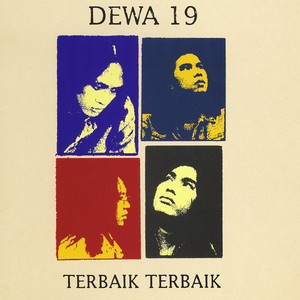

Personel yang membentuk perjalanan musik Dewa 19 dari masa ke masa.
Dewa 19 dibentuk pada tahun 1986 di Surabaya oleh Ahmad Dhani, Andra Ramadhan, Erwin Prasetya, Wawan Juniarso, dan Ari Lasso. Nama "Dewa" berasal dari gabungan nama depan para personelnya, sedangkan angka "19" melambangkan usia rata-rata mereka saat band ini didirikan. Berawal dari sebuah band sekolah, Dewa 19 aktif mengikuti berbagai festival musik hingga akhirnya merilis album perdana pada tahun 1992 dan mulai dikenal luas oleh masyarakat Indonesia.
Sejak merilis album perdana pada tahun 1992, Dewa 19 berhasil menarik perhatian pecinta musik Indonesia. Berbagai lagu seperti Kangen, Roman Picisan, dan Pupus menjadi karya yang sangat populer dan mengantarkan Dewa 19 meraih banyak penghargaan sepanjang perjalanan kariernya.
Memasuki akhir tahun 2000-an, aktivitas Dewa 19 mulai berkurang karena pergantian personel dan kesibukan masing-masing anggota. Band ini sempat vakum dari dunia musik, namun karya-karya mereka tetap dikenang dan terus dinikmati oleh para penggemar hingga saat ini.
Kini Dewa 19 kembali aktif menggelar konser di berbagai kota di Indonesia maupun luar negeri. Band ini tampil dengan konsep yang menghadirkan beberapa vokalis, seperti Ari Lasso, Once Mekel, Ello, dan Virzha. Dengan tetap membawakan lagu-lagu legendaris serta penampilan yang berkualitas, Dewa 19 terus mempertahankan eksistensinya sebagai salah satu band paling berpengaruh dalam sejarah musik Indonesia.
Perjalanan karya Dewa 19 melalui delapan album studio yang seluruhnya meraih status multi-platinum di Indonesia.


